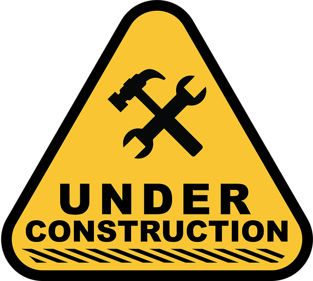

“To create is not to add. It is to strip away the noise, the fear, the walls.”
— Professor Alvin

Junction Resonances
Let us now explore the resonance manifolds of various molecular junctions.
We begin with a simple elementary case: the linear junction.
This junction exhibits two distinct resonance modes:
We can compile these resonance states into a truth table where each row corresponds to one of the possible resonance configurations.
As we can observe, the state of \(B\) is always the exact inverse of \(A\). This yields a truth table functionally identical to a classical NOT gate.
You can practice by sketching an arbitrary simple junction and determining its allowed resonance modes. It is a remarkably effective exercise for developing a physical feel for how these molecular networks behave.
Through this exercise, you will quickly encounter the triangular junction:
It features four resonance modes:
And here is the resulting truth table:
Notice that this table directly mirrors the behavior of a XNOR gate.
Now let us examine a slightly more intricate topology: the “H” junction.
This junction possesses five resonance modes:
And here is the resulting table:
Note that the table above does not correspond to any standard logic gate or combination of classical boolean gates. In fact, the vast majority of molecular topologies behave this way.
Finally, consider the square junction:
It exhibits seven resonance modes in total:
The resulting table:
Here, a fundamentally new situation arises: the first two rows, consisting entirely of zeros, repeat themselves. Consequently, this specific resonance mode carries twice the statistical weight of the others.
Classical boolean logic provides no native vocabulary to express such non-uniform states.
Deterministic certainty dissolves here. We are forced to broaden our theoretical horizons into statistics.
Probabilistic Bits (p-bits)
Probabilistic bits provide a robust mathematical framework for encoding and processing information. By applying this formalism to carbon-carbon bonds, we can natively capture the stochastic nature of chemical systems and open up new frontiers in molecular computing.
Think of a coin toss. Once flipped, the coin can land on tails (state “0”) or heads (state “1”). With a fair coin, there is an equal probability—a 50% chance—of landing on state “0” and a 50% chance of landing on state “1”.
We could also bias the coin so that it carries a one-in-four chance (25%) of landing on “0”, and a three-in-four chance (75%) of landing on “1”.
The limiting boundary case occurs when there is a 0% chance of being in one state and a 100% chance of being in the other. Under these conditions, deterministic certainty is recovered, and the probabilistic bit collapses back into a classical boolean bit.
Mathematically, we formulate probabilistic bits using the exact same transition matrices introduced earlier. The only operational difference lies in the values of the matrix elements.
Any continuous probability distribution is physically admissible, provided that two fundamental axioms are satisfied:
1. Every individual element must lie strictly within the closed interval \([0, 1]\).
2. The elements along each row must sum to exactly 1 (equivalent to 100%—the total probability space).
Consequently, there is no probability leak into unmodeled states (for example, ruling out the pathological edge case where the coin lands balanced on its side).
- A fair coin: \(\begin{bmatrix} 1/2 & 1/2 \end{bmatrix}\) (any deviation represents a biased coin).
The first element quantifies the probability of observing a “0”; the second element quantifies the probability of observing a “1”.
Protobits
Common Objections
“A molecule featuring a three-membered ring would be energetically unstable due to extreme ring strain.”
“Several of these proposed topologies are non-aromatic, meaning their resonance structures are by no means equiprobable.”
“Larger molecular networks would suffer from rapid environmental decoherence in any realistic, noisy medium.”
“How are the physical inputs and outputs concretely interfaced with the rest of the circuit?”